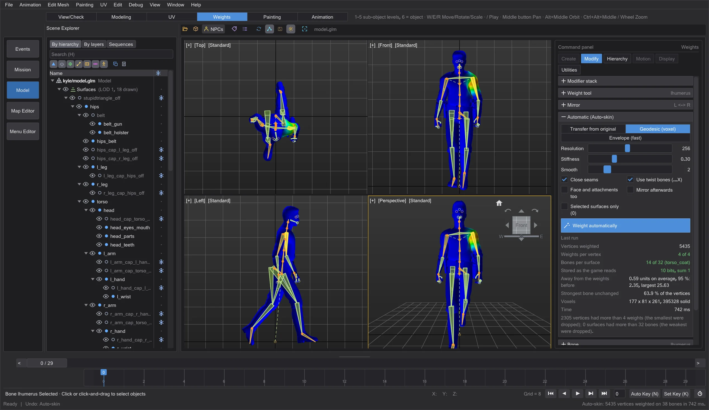
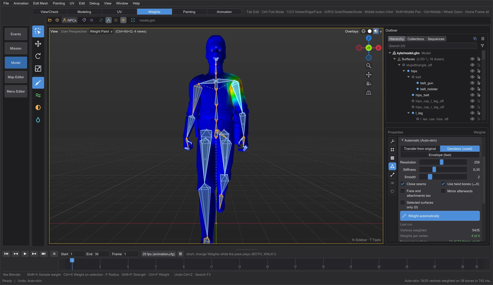

Model tab: Auto-skin
Give a mesh its bone weights with one click: from an original of the game with the same skeleton, or computed from the skeleton through the inside of the mesh. The result always fits the game: at most 4 weights per vertex, at most 32 bones per surface, stored in 10 bits.
Where to find it#
Open a model that has a skeleton (a .glm whose .gla is found). The group Automatic (Auto-skin) stands in the panel on the right of the area Weights (Model tab: Weights), in both control modes: the method, the settings, the main button Weight automatically and the result of the last run. Weight automatically and Auto-skin: settings are also in the search of all actions (X, F3 in Blender mode) and in the right-click of the view under Weights; Auto-skin: settings shows the same group as a window of its own. A run is one undo step; the animation keeps playing, so you see the new weights in the pose at once.


Three methods#
Transfer from original takes the weights from the nearest point of an original with the same skeleton, surface by surface - type its path under Original (models/players/kyle/model.glm is preset). For a new player figure this is usually the best start, because the weights are the ones Raven's artists set, including the face. Points farther from the original than Farthest distance (a cloak, a piece of armour) get geodesic weights. Geodesic (voxel) needs no original: it fills the model with voxels, including the caps, and measures the way from every point to every bone through the inside of the mesh, not through the air - an arm that lies close to the body keeps the weights of the arm. This is the method for creatures, props and figures with their own skeleton. Envelope (fast) uses the straight distance; it is fast but mixes up parts that lie close together, a stopgap.
Settings#
Resolution is the number of voxels along the longest side of the mesh (32 to 512); 256 suits a player figure. Stiffness sets how wide the blends between two bones are: 0 is soft, 1 puts each point almost entirely on its nearest bone. Smooth averages each point with its neighbours, as many passes as set. Close seams gives vertices at the same place the same weights, also across surfaces - the .glm splits vertices at UV seams and where surfaces meet, and without this the surfaces can tear apart in motion. Use twist bones (...X) lets the twist bones (lhumerusX, lradiusX, lfemurX) carry the half of their limb towards the next joint, as in Raven's figures. Face and attachments too also weights the face bones and coat tails; it is off by default, because their small areas cannot be found from the skeleton alone - for faces use Transfer from original or paint by hand. Mirror afterwards copies the side +X onto -X after the run. With Selected surfaces only only the surfaces selected in the scene explorer are weighted, for example a new piece of armour on a finished figure; the number in brackets is the number of selected surfaces.
The result and the limits of the game#
Under Last run the group lists what the run produced. Weights per vertex: a .glm carries at most 4 weights per vertex; where more bones pulled at a vertex, the smallest were dropped and the rest brought back to a sum of 1. Bones per surface: a surface can refer to at most 32 bones; if a surface had more, its weakest bones were dropped - at a seam the neighbouring surface changes with it, so the seam stays closed. Stored as the game reads: the weights are stored in 10 bits and the last one as the rest to 1, exactly as the game reads them - what you see is what the game shows. Away from the weights before compares with the weights the model had before the run: how far a vertex lies from its old place, over 200 frames spread across the animations of the skeleton, and at how many vertices the strongest bone stayed the same. For an original of the game this is the distance to Raven's weights. Highlighted lines name bones that lie outside the mesh and loose parts that no bone reaches through the mesh.